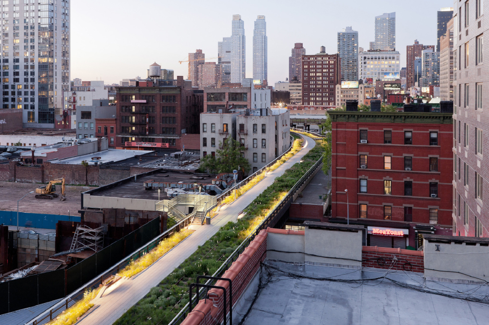
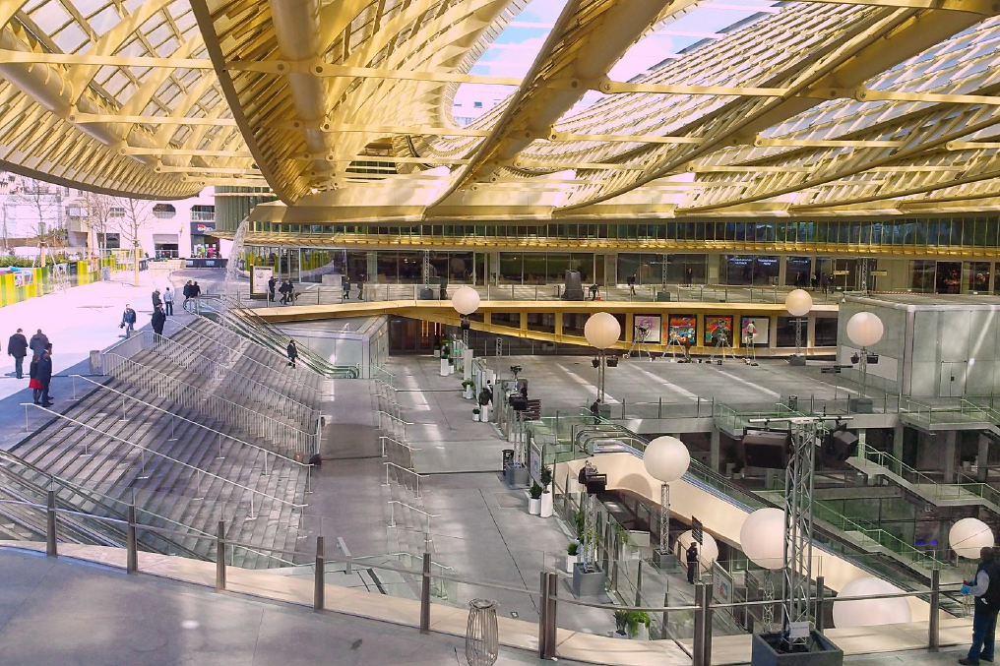
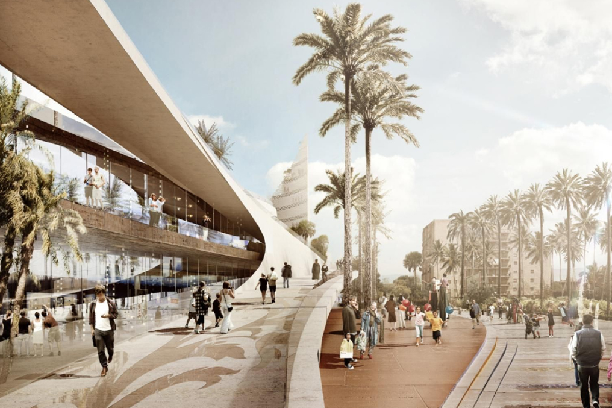
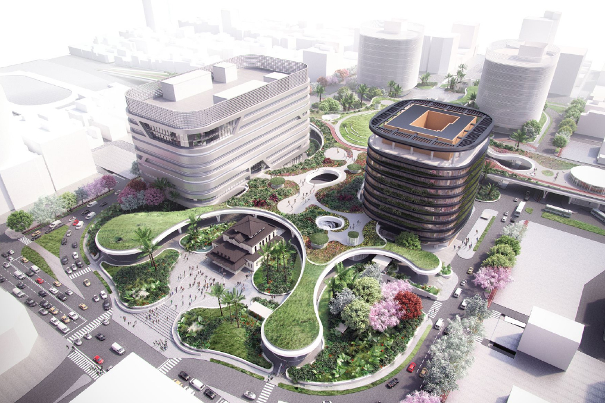
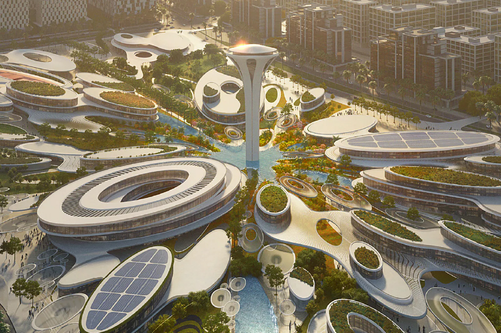

Highline Park, N.Y.
2009
High Line es más que un parque. Es un espacio público donde puede ver arte, caminar por jardines, experimentar una actuación, saborear comida deliciosa o simplemente conectarse con amigos y vecinos, mientras disfruta de una perspectiva única de la ciudad.
Al cambiar las reglas de enfrentamiento entre la vida vegetal y peatones, la estrategia de “agro-tectura” combina orgánicos y materiales de construcción en una mezcla que modifica las proporciones y se adapta a la naturaleza, el cultivo, lo íntimo, y la hiper-social.

Les Halles, Paris
2014
Ubicado en el corazón de la ciudad, cuenta actualmente con numerosos restaurantes, bares, tiendas de moda, un gran centro comercial (el Westfield Forum des Halles) que tiene, entre otros atractivos, un cine de más de 30 salas, una piscina cubierta y el Forum des images. Asimismo, posee la estación subterránea más grande del mundo: Châtelet-Les Halles.

Masterplan San Berillo, Italia
2015
El concepto arquitectónico se basa en una geometría tectónica realizada con 4 placas entrelazadas accesibles por rampas o escaleras, perforadas con patios verdes interiores, que forman logias y terrazas. El resultado es una plaza urbana en 3D inspirada en los jardines de Babilonia.

Inhabitat, Kaohsiung
2016
El esquema forma la pieza central del vasto proyecto de ferrocarril subterráneo del área metropolitana, que incluye 7 estaciones subterráneas a lo largo de un túnel ferroviario de 9,75 kilómetros. El centro de transporte planificado integra los servicios de tren, metro y autobús, y se adapta a las necesidades de taxis y bicicletas.

Aljada Central Hub, Sarja
2018
Un parque, jardines, y plazas públicas cubrirán 68,000 metros cuadrados del terreno, cada uno de ellos diseñado estratégicamente para ser utilizado durante todo el año, incluso con el intenso calor del verano. La construcción incluirá un espacio acuático de 6,000 metros cuadrados, un centro de deportes extremos, áreas comerciales y un campo de golf.
